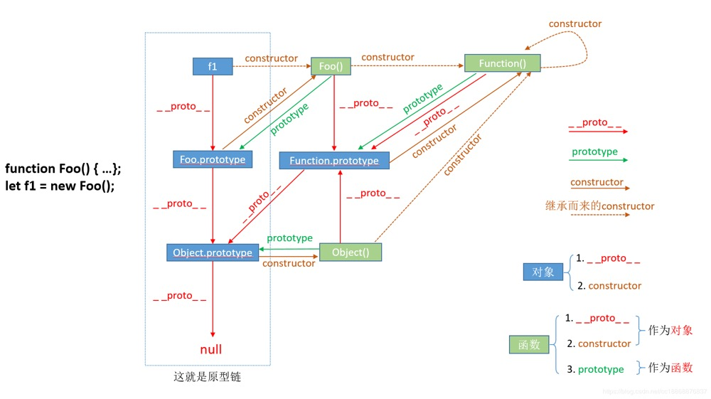
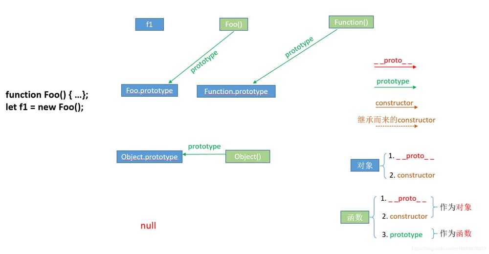
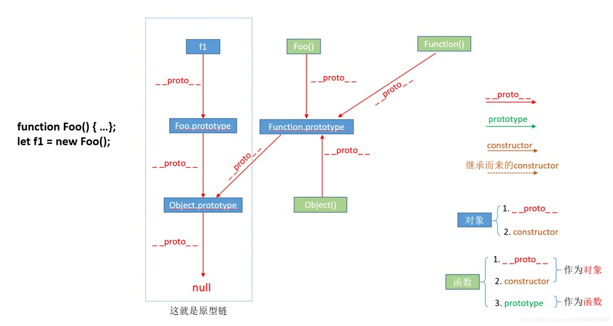
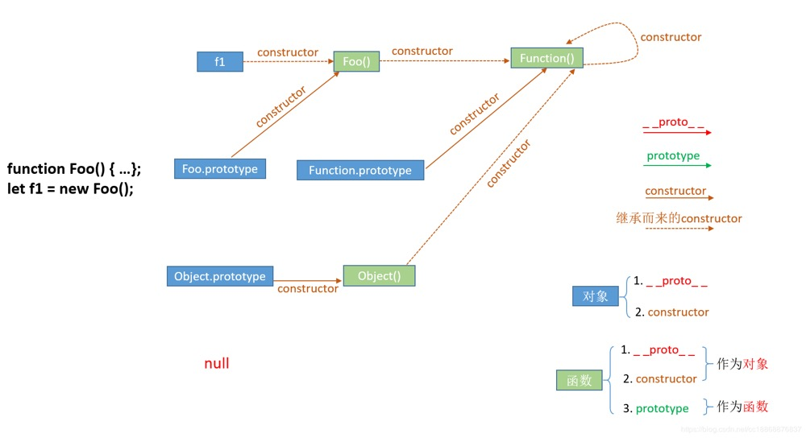

原型链
ECMAScript 中描述了原型链的概念，并将原型链作为实现继承的主要方法。其基本思想是利用原型让一个引用类型继承另一个引用类型的属性和方法。
搞懂原型对象和原型链其实就是搞懂 prototype、__proto__ 和 constructor 之间的相互关系。
我们通过示例并附加图例阐述这种复杂的相互关系。
图例
- 红色箭头表示
__proto__属性指向 - 绿色箭头表示
prototype属性指向 - 棕色箭头表示本身具有的
constructor属性 - 蓝色方块表示对象
- 浅绿方块表示函数
在 JavaScript 中，这三者之间依附在不同的引用对象类型上。
- 对象：
__proto__和constructor是对象独有的。 - 函数：
prototype是函数独有的。但是函数也是对象，所以函数也有__proto__和constructor。
显式原型
显式原型对象 prototype 由<span style="color: red;font-weight: bold">函数所独有</span>，它是从<span style="color: red;font-weight: bold">一个函数指向另一个对象</span>。它的含义是<span style="color: red;font-weight: bold">函数的原型对象</span>，也就是这个函数（其实所有函数都可以作为构造函数）所创建的实例的原型对象。由此可知：foo.__proto__ === Foo.prototype，它们两个完全一样。
那 prototype 属性作用又是什么呢？它的<span style="color: red;font-weight: bold">作用</span>就是包含可以由特定类型的所有实例共享的属性和方法，也就是让该函数的实例化对象们都可以找到公用的属性和方法。
任何函数在创建的时候，其实会默认同时创建该函数的 prototype 对象。
隐式原型
在 JavaScript 中的<span style="color: red;font-weight: bold">对象</span>中都有一个 __proto__ 属性，从上图可以看出<span style="color: red;font-weight: bold">一个对象指向另一个对象</span>，即指向相对应的对象的原型对象。这个原型对象称为<span style="color: red;font-weight: bold">隐式原型对象</span>。
隐式原型对象的作用在于，当访问一个对象的属性或方法时，如果该对象内部不存在这个属性，那么就会从它的 __proto__ 属性所指向的（原型）对象中寻找（原型也是对象，也有它自己的原型），如果原型对象中也找不到，就会继续在该原型对象的原型对象中找，以此类推，直到找到属性或方法为止，或者查找到顶层原型对象 null，就结束查找，返回 undefined。
整个查找过程中，从当前对象出发沿着原型对象（__proto__）构成的链条查找相关属性和方法直到结束，这些相互关联的对象组成的链条就是<span style="color: red;font-weight: bold">原型链</span>。
构造函数
属性 constructor 也是<span style="color: red;font-weight: bold">对象</span>才拥有的，它是从<span style="color: red;font-weight: bold">一个对象指向一个函数</span>，含义就是<span style="color: red;font-weight: bold">指向该对象的构造函数</span>，每个对象都有构造函数（本身拥有或继承而来，继承而来的要结合 __proto__ 属性查看会更清楚点），从上图中可以看出 <span style="color: red;font-weight: bold">Function</span> 这个对象比较特殊，它的构造函数就是它自己（因为 Function 可以看成是一个函数，也可以是一个对象），所有函数和对象最终都是由 Function 构造函数得来，所以 constructor 属性的终点就是 <span style="color: red;font-weight: bold">Function</span> 这个函数。
原型对象
原型对象即为当前实例对象的父对象
| 显式原型对象 | 隐式原型对象 |
|---|---|
属性 prototype |
属性 __proto__ |
| 函数独有 | 对象独有（函数也是对象，因此函数也有该属性） |
定义函数时被自动赋值，值默认为 {} |
在创建实例对象时被自动添加，并赋值为构造函数的 prototype 值 |
| 用于实现基于原型的继承与属性的共享 | 构成原型链，同样用于实现基于原型的继承 |
🌰 代码示例：访问原型链中的原型对象
const Foo = function () {};
const foo = new Foo();
// 构造函数 Foo {} 是函数 foo 的原型对象
console.log(foo.__proto__);
// 构造函数 Object {} 是函数 Function 的原型对象
console.log(foo.__proto__.__proto__);
// 原型链顶层
console.log(foo.__proto__.__proto__.__proto__);
// null
原型链中查找属性方法和访问原型链中的原型对象的区别
- 在原型链中查找属性或方法，如果没有查找到相关属性或方法，返回的是
undefined，表示原型链中没有该属性或方法。 - 而通过访问原型链中的原型对象，到达原型链终点，即
Object.prototype的值为null。
原型对象的指向
__proto__ 的指向取决于对象创建时的实现方式。
字面量方式
当通过字面量方式创建对象时，它的原型就是 Object.prototype。
虽然我们无法直接访问内置属性 __proto__，但我们可以通过 Object.getPrototypeOf() 或对象的属性 __proto__ 获取对象的原型。
const foo = {};
console.log(foo.__proto__ === Object.prototype);
// true
console.log(Object.getPrototypeOf(foo) === Object.prototype);
// true
构造器方式
const Foo = function () {};
const foo = new Foo();
console.log(foo.__proto__ === Foo.prototype);
// true
console.log(Object.getPrototypeOf(foo) === Foo.prototype);
// true
Object.create 方式
通过 Object.create() 方式创建的对象会以传入的对象参数为对象的原型。
const foo = {};
const bar = Object.create(foo);
console.log(bar.__proto__ === foo);
原型对象与实例
通过 instanceof 操作符可以确定原型与实例的关系。
// 假设 instanceof 操作符左边是 L 右边是 R
L instanceof R
// instanceof 运算时 通过判断 L 的原型链是否存在 R.prototype
L.__proto__.__proto__... === R.prototype
⚠️ 注意：instanceof 操作符会递归查找 L 的原型链，即 L.__proto__.__proto__.__proto__... 直到找到了或者到达顶层为止。
构造器 Function 的构造器是它自身：
Function.constructor === Function; // true
构造器 Object 的构造器是 Function（因此可得所有构造器的 constructor 都指向 Function）
Object.constructor === Function; // true
构造器 Function 的 [[Prototype]] 是一个特殊的匿名函数
console.log(Function.__proto__); // function(){}
这个特殊的匿名函数的 [[Prototype]] 指向 Object 的 prototype 原型。
Function.__proto__.__proto__ === Object.prototype; // true
Object 的 [[Prototype]] 指向 Function 的 prototype 也就是上述的特殊的匿名函数
Object.__proto__ === Function.prototype; // true
Function.prototype === Function.__proto__; // true
内置对象 Function 和 Object 的关系：
Function instanceof Object; // true
Object instanceof Function; // true
其他标准内置对象的字面量原型链关系：
console.log(true.__prto__.__proto__ === Object.prototype);
console.log((123).__proto__.__proto__ === Object.prototype);
console.log('String'.__proto__.__proto__ === Object.prototype);
console.log([].__proto__.__proto__ === Object.prototype);
console.log({}.__proto__ === Object.prototype);
总结：
- 所有的构造器的 constructor 都指向 Function
- Function 的 prototype 指向一个特殊匿名函数，而这个特殊匿名函数的
__proto__指向 Object.prototype
参考资料：